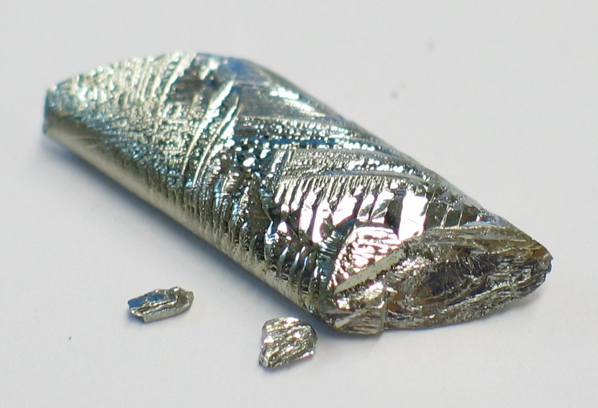

Research
- 🔬Boron Arsenide – Super‑Thermal Conductor
“Thermal conductivity of boron arsenide above 2100 W/m·K at room temperature†(May 2025). Experimental BAs crystals exceed 2100 W/m·K, making them ideal for heat management in semiconductors :contentReference[oaicite:1]{index=1}.
Follow link - 🔬Cubic Boron Arsenide – Ideal Semiconductor
MIT researchers experimentally confirm that cubic BAs has exceptional electron‑hole mobility and thermal conductivity—potentially outperforming silicon in electronics :contentReference[oaicite:2]{index=2}.
Follow link - 🔬Si/Ge/B Anodes in Metal‑Air Batteries
A 2023 ScienceDirect review explores the use of silicon, germanium, and boron-based anodes for high‑energy‑density metal‑air batteries—demonstrating over 300 h discharge cycles :contentReference[oaicite:3]{index=3}.
Follow link - 🔬Cubic BAs Used for Heat in GaN Devices
Researchers integrated BAs with gallium nitride transistors, using BAs as a thermal interface material—showing better heat dissipation than silicon carbide or diamond :contentReference[oaicite:4]{index=4}.
Follow link
Key Characteristics
B
- Hard, brittle black solid
- Used in borosilicate glass (like Pyrex)
- Important in fertilizers and detergents
- Moderate electrical conductivity (semimetal)

Si
- Second most abundant element in Earth's crust
- Key semiconductor material in electronics
- Found in sand, quartz, and glass
- Brittle and shiny like a metal, but not ductile

Ge
- Gray-white brittle metalloid
- Used in fiber optics and infrared optics
- Important in semiconductors (like silicon)
- Resembles tin in appearance

As
- Steel-gray and brittle
- Highly toxic and used in pesticides (less so now)
- Also used in semiconductors and lead alloys
- Famous for historical poisoning cases

Sb
- Shiny, silvery solid—brittle and toxic
- Used in flame retardants and lead alloys
- Also a semiconductor in diodes
- Used in ancient times as a cosmetic (kohl)

Te
- Silvery-white brittle metalloid
- Used in solar panels and thermoelectric devices
- Improves machinability of steel and copper
- Rare and mildly toxic

At
- Extremely rare and radioactive
- Considered a metalloid, but behaves like a halogen too
- Used in some cancer treatments (radioisotope therapy)
- Least studied naturally occurring element

Real Life Uses
B
Borosilicate Glass:
Boron is used in making heat-resistant borosilicate glass like Pyrex.
Used in: Laboratory glassware, cookware, fiberglass insulation, detergents.
Si
Semiconductors:
Silicon is the backbone of modern electronics due to its semiconducting properties.
Used in: Computers, solar panels, microchips, smartphones, glass, ceramics.
As
Semiconductor Alloys:
Arsenic is used in gallium arsenide (GaAs) semiconductors and light-emitting devices.
Used in: LEDs, lasers, solar cells, and formerly in pesticides (use now restricted).
Sb
Flame Retardants:
Antimony trioxide is widely used as a flame retardant synergist.
Used in: Plastics, textiles, brake pads, and batteries.
Te
Solar Panels:
Tellurium is used in cadmium telluride (CdTe) solar cells for high-efficiency energy conversion.
Used in: Solar panels, thermoelectric devices, and steel alloys.
At
Cancer Treatment (Experimental):
Astatine is studied for targeted alpha therapy (TAT) in cancer treatment due to its radioactive properties.
Used in: Experimental radiotherapy applications (very rare and short-lived).